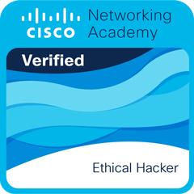

SOC · Détection · Blue Team
- Analyse de logs
- Qualification d'alertes
- Event IDs Windows
- Journaux auth. Linux
- SIEM (notions)
- IDS/IPS (notions)
- Fail2Ban
- Durcissement système
- Réponse à incident
Disponible dès début janvier 2027 · Stage PFE / pré-embauche
Élève ingénieur en 5ᵉ année de cybersécurité à l'UIR.
Mon fil conducteur : la
défense opérationnelle — analyser des logs, qualifier des alertes,
distinguer le faux positif de la vraie menace, durcir des systèmes et documenter rigoureusement.
01 À propos
Élève ingénieur en 5ᵉ année de cybersécurité à l'Université Internationale de Rabat (UIR), je recherche un stage de fin d'études (PFE) ou une pré-embauche en tant qu'analyste SOC / Blue Team, orienté supervision, détection et réponse à incident.
Mon profil combine la défense des systèmes (analyse de logs Windows/Linux, durcissement, chaîne détection → réponse → amélioration) et la sécurité des infrastructures critiques (PKI, OPC UA, diagnostic système bas niveau). J'ai aussi une expérience concrète de l'audit de sécurité web (méthodologie OWASP) et de la data / IA appliquée à la détection (classification de contenus malveillants).
Habitué au travail en binôme et en équipe, à la rédaction technique et à la montée en compétence rapide sur des outils inconnus.
Logs Windows/Linux, qualification d'alertes, durcissement, réponse à incident.
PKI / X.509, OPC UA, diagnostic système bas niveau.
Méthodologie OWASP ; IA appliquée à la détection de contenus malveillants.
02 Compétences
03 Expériences
Durant l'été 2026, j'ai réalisé trois stages à : DATAPROTECT, 4DBC × IFGICT et UIR.
Le stage à SEOCOM, date de l'été 2025.
DATAPROTECT — Business Unit Critical Infrastructure Cybersecurity · Casablanca / Rabat
· 1 mois
4D Business Consulting (4DBC) × IFGICT · Rabat (hybride)
· 1 mois
Université Internationale de Rabat (UIR) · Salé — encadrement O. Cherqi & Y. Hamzaoui
· 1 mois
SEOCOM · Marrakech
· 1 mois.
04 Projets
Projet phare · SOC / Blue Team
Projet académique : lab isolé Active Directory (Windows Server 2022) + Ubuntu, avec une chaîne complète de bout en bout. Détection par analyse de logs, durcissement, puis re-test des attaques pour prouver l'efficacité des mesures.
/var/log/auth.log
Sécurité IoT
Analyse de sécurité du protocole Zigbee en simulation IoT : réseau maison intelligente (coordinateur, end device, capteurs LM35/PIR, nœud attaquant), 4 attaques simulées — Replay, Spoofing, injection de commandes, Flood/DoS — puis contre-mesures (authentification, chiffrement, anti-replay).
Voir sur GitHub : Project-Securit-Zigbee (nouvel onglet)Sécurité web · RH
Application RH de gestion de demandes d'attestations (employé / administrateur). Sécurité : requêtes préparées (anti-injection SQL), contrôle d'accès par rôle, sessions, échappement de sortie, génération de PDF.
Voir sur GitHub : Gestionnaire-d-Attestations (nouvel onglet)Cloud · Azure
Prise de présence par reconnaissance faciale. Architecture serverless Azure (Static Web Apps, Functions Python, Blob Storage, Custom Vision, Database for MySQL, SendGrid). Dataset consenti, chiffrement au repos et en transit, usage strictement pédagogique.
Voir sur GitHub : Reconnaissance_Faciale (nouvel onglet)IA · RAG
Assistant IA de voyage (RAG) : itinéraires personnalisés + chatbot contextuel FR/EN. Backend FastAPI, LangChain, index vectoriel FAISS, embeddings multilingues (sentence-transformers), LLM Mistral-7B-Instruct via Hugging Face. Projet de groupe (5 auteurs).
Voir sur GitHub : Morocco_Smart_Guide (nouvel onglet)Web · Base de données
Base de données interactive du roman marocain francophone : interface publique + admin, recherche dynamique (AJAX / Fetch / JSON), API PHP (PDO). Bonnes pratiques de sécurité web. Projet universitaire (2 auteurs).
Voir sur GitHub : projet_culture_bdd (nouvel onglet)05 Formation
2025 – présent · Salé, Maroc
Cycle ingénieur — Cybersécurité (5ᵉ année)
2024 – 2025 · Rabat, Maroc
Cycle ingénieur — Génie informatique
2022 – 2024 · Ouagadougou, Burkina Faso
Prépa Maths–Physique (MP)

06 Contact
Vous recrutez un stagiaire PFE ou un profil en pré-embauche pour votre SOC / équipe Blue Team à partir de janvier 2027 ? Écrivez-moi.